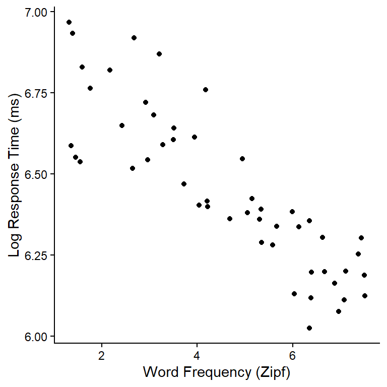
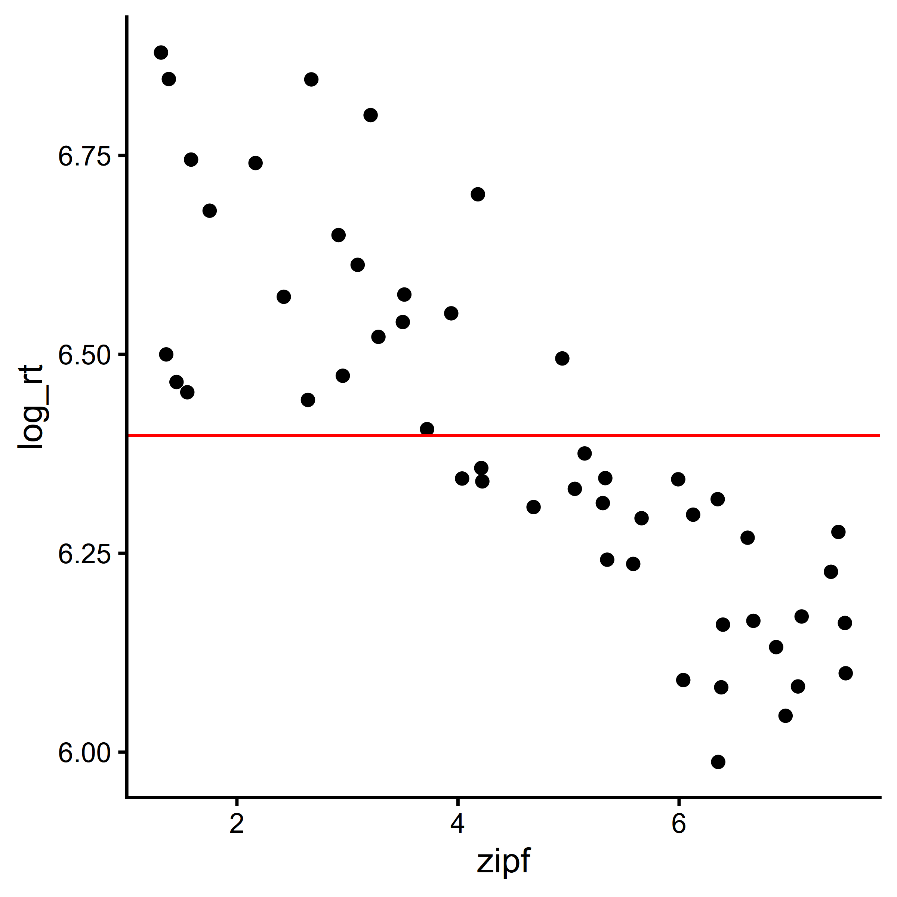
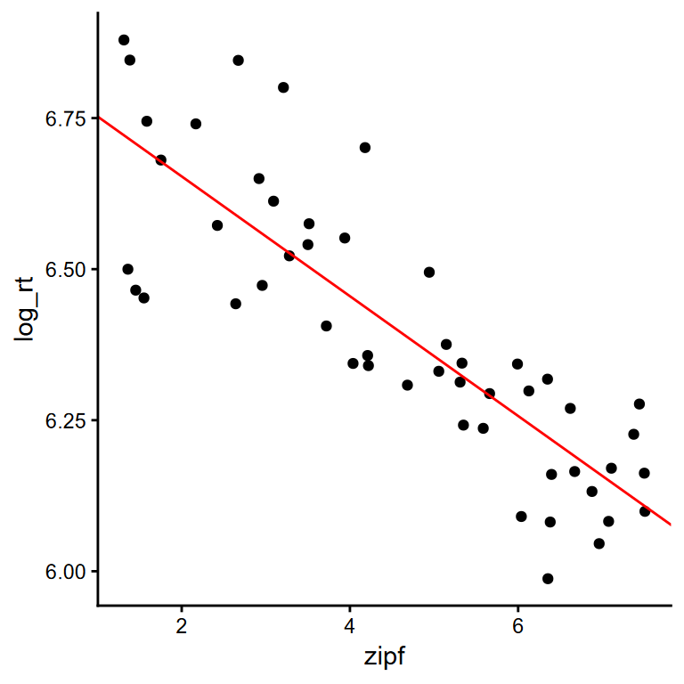
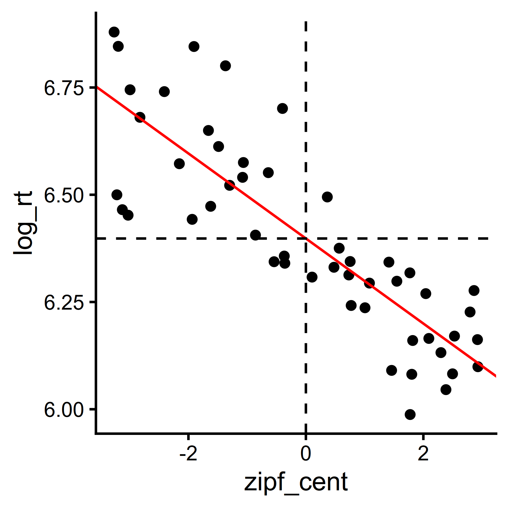
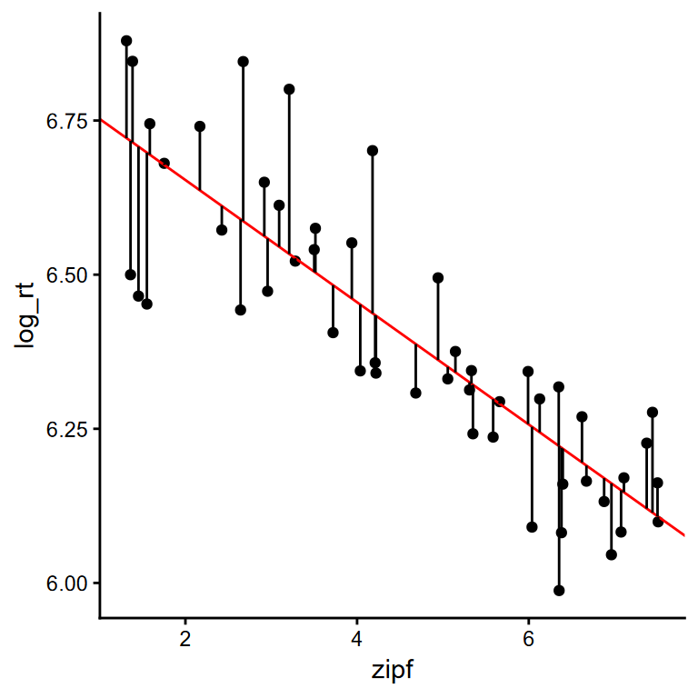
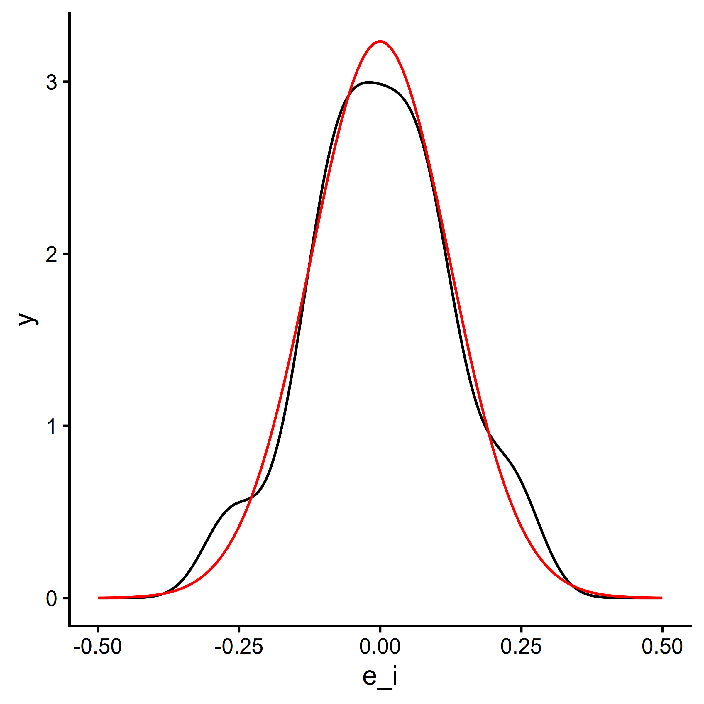
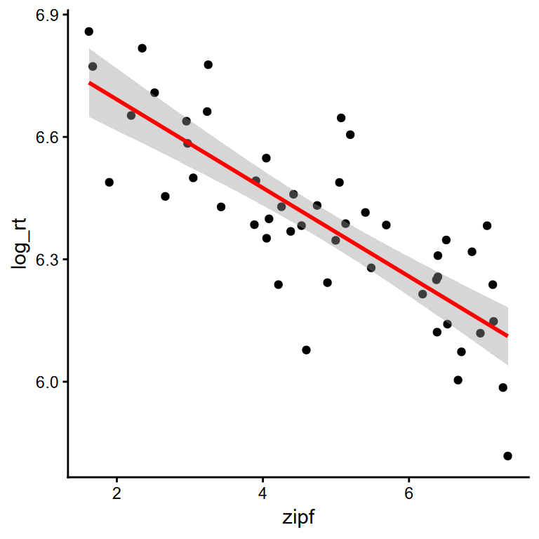

library(dplyr) # for data wrangling
library(readr) # for importing data
library(ggplot2) # for plotting1 Recap on Linear Models
1.1 Packages
We will be using the following packages in this section:
1.2 Building up the Linear Model
A common behavioural task in language and word recognition research is the Lexical Decision Task. In Lexical Decision Tasks, we present real words (e.g., table) and word-like pseudowords (e.g., frimp). We then measure people’s responses and their response times to each item.
The best predictor of response time to real words is word frequency: response times are faster to words that occur more often.
Here is a plot of some made-up data (based on real estimates) showing a relationship between Zipf word frequency (a log-transformed count variable; van Heuven et al. 2014) and response time (ms). Each point is depicts one word.

If you want to follow along, you can load the data into your R session with:
dat <- read_csv("https://jackedtaylor.github.io/AOMS5/sims_lm.csv")How could we describe these data?
1.3 The Average (Intercept)
One very simple but powerful description could be to just calculate the average log response time.
mean(dat$log_rt)[1] 6.397823Typically, this is termed the Intercept, and is written as \(\beta_0\).
If we were to try to predict our dependent variable using just the intercept, a standard way of writing this would be:
\[y_i = \beta_0\]
We could plot our prediction as a red line on our plot from earlier:
ggplot(dat, aes(zipf, log_rt)) +
geom_point() +
geom_hline(
yintercept = mean(dat$log_rt),
colour = "red"
)
This is a start, but it ignores the clear effect of frequency (Zipf) on our response times.
1.4 Intercept + Slope
In addition to the intercept, we can calculate a slope. This is usually written as \(\beta_1\). It is multiplied by our predictor, and represents the change in \(y_i\) associated with a one-unit increase in \(x\) for item \(i\).
\[ logRT_i = \beta_0 + \beta_1 zipf_i \]
Whereas before we could just calculate the mean, now we need to estimate these parameters. R has a handy lm() function for this.
lm(log_rt ~ 1 + zipf, data = dat)
Call:
lm(formula = log_rt ~ 1 + zipf, data = dat)
Coefficients:
(Intercept) zipf
6.85171 -0.09913 We could plot this like so:
ggplot(dat, aes(zipf, log_rt)) +
geom_point() +
geom_abline(intercept=6.85171, slope=-0.09913, colour="red")
Note
Note that the model intercept \(\beta_0\) is now 6.851709, rather than 6.3978225. This is because the intercept actually specifies the value of our red line when \(x_i=0\). If we want \(\beta_0\) to still reflect the mean, we can just mean-centre zipf.
dat <- mutate(dat, zipf_cent = zipf - mean(zipf))
ggplot(dat, aes(zipf_cent, log_rt)) +
geom_point() +
geom_abline(intercept=6.398, slope=-0.09913, colour="red") +
geom_vline(xintercept=0, linetype="dashed") +
geom_hline(yintercept=6.398, linetype="dashed")
One last issue is that our model is only predicting values along the red line. Yet none of our observations fall perfectly on the line. There is some variability, or “noise”, around our estimates.
1.5 Intercept + Slope + Residual
“Residual” is a term often used to refer to unexplained variability. We could calculate it as everything left unexplained after we have accounted for the intercept.
dat <- mutate(
dat,
pred = 6.85171 + -0.09913 * zipf,
e_i = pred - log_rt
)We could visualise these residuals as the distance from the line:
ggplot(dat, aes(zipf, log_rt)) +
geom_point() +
geom_abline(intercept=6.85171, slope=-0.09913, colour="red") +
geom_segment(aes(xend = zipf, yend = pred))
A powerful way of capturing such variability around estimates is as a normal distribution. If we plot the residuals we can see that they are indeed roughly normal:
ggplot(dat, aes(e_i)) +
# plot the density of e_i
geom_density() +
# plot a normal distribution for reference
geom_function(
fun = dnorm, colour = "red",
args = list(mean=0, sd=sd(dat$e_i))
) +
xlim(-0.5, 0.5)
This noise is typically written as \(e_i\). We specify it as being drawn from a normal distribution (\(\mathcal{N}()\)) with a mean of zero and a standard deviation of \(\sigma\):
\[\begin{aligned} logRT_i &= \beta_0 + \beta_1 zipf_i + e_i \\ e_i &\sim \mathcal{N}(0, \sigma) \end{aligned}\]
We now have 3 free parameters that are estimated by the lm() function in R:
- \(\beta_0\):
(Intercept) - \(\beta_1\):
zipf - \(\sigma\):
Residual standard error
summary( lm(log_rt ~ 1 + zipf, data = dat) )
Call:
lm(formula = log_rt ~ 1 + zipf, data = dat)
Residuals:
Min 1Q Median 3Q Max
-0.245604 -0.078863 -0.000974 0.082422 0.267120
Coefficients:
Estimate Std. Error t value Pr(>|t|)
(Intercept) 6.851709 0.045030 152.16 < 2e-16 ***
zipf -0.099130 0.009051 -10.95 1.18e-14 ***
---
Signif. codes: 0 '***' 0.001 '**' 0.01 '*' 0.05 '.' 0.1 ' ' 1
Residual standard error: 0.1246 on 48 degrees of freedom
Multiple R-squared: 0.7142, Adjusted R-squared: 0.7083
F-statistic: 120 on 1 and 48 DF, p-value: 1.184e-141.6 Simulating New Data
Now that we have estimated those parameters, we can simulate a new dataset using the formula.
Here is the formula we will be using:
\[\begin{aligned} logRT_i &= \beta_0 + \beta_1 Zipf_i + e_i \\ e_i &\sim \mathcal{N}(0, \sigma) \end{aligned}\]
First, we will define the parameters used in the simulation:
# intercept
b0 <- 6.85171
# slope for the effect of Zipf
b1 <- -0.09913
# standard deviation of the residuals
s <- 0.1246
# number of observations to simulate
n <- 50Then, we can plug these in to simulate log response times for a simulated sample of words:
# build a simulated dataset
sim_dat <- tibble(
# random Zipf values from 1.5 to 7.5
zipf = runif(n, 1.5, 7.5),
# simulate residuals as Normal(0, sigma)
e_i = rnorm(n, 0, s),
# simulate log response times using the formula above
log_rt = b0 + b1 * zipf + e_i
)Finally, we can plot this, to show how the simulated dataset shows a very similar pattern to the original data:
ggplot(sim_dat, aes(zipf, log_rt)) +
geom_point() +
geom_smooth(method="lm", colour="red")